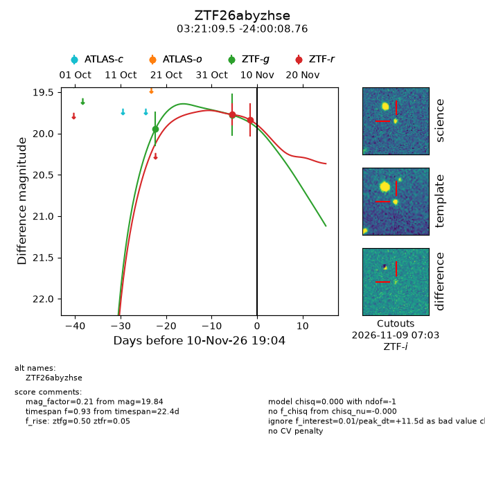
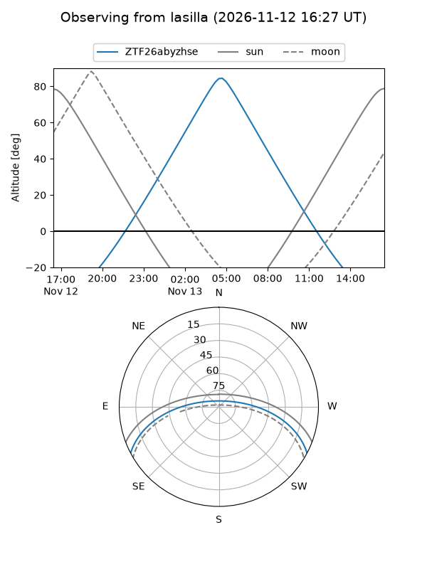
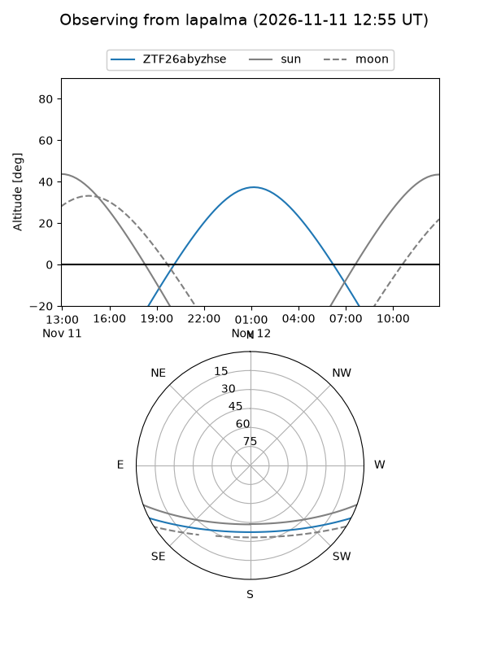
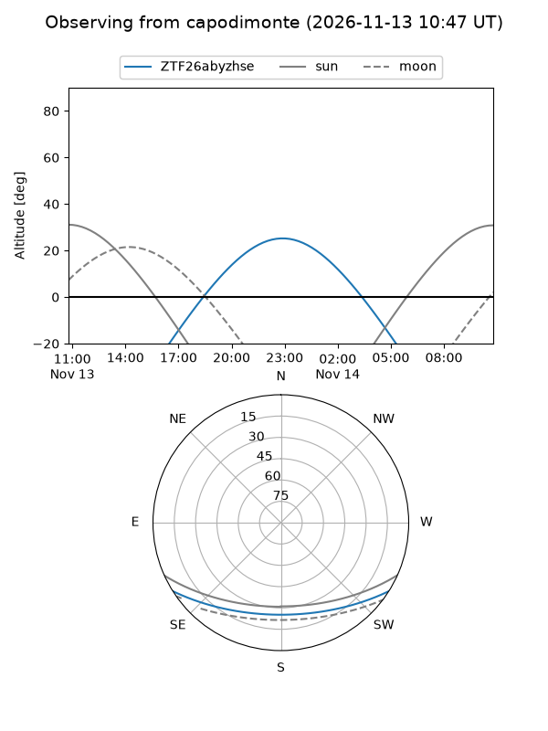
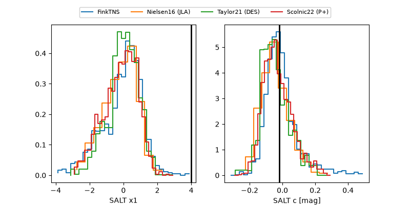

ZTF26abyzhse
Target ZTF26abyzhse at 2026-11-10 19:07
Aliases and brokers:
FINK-ZTF: ztf.fink-portal.org/ZTF26abyzhse
Lasair-ZTF: lasair-ztf.lsst.ac.uk/objects/ZTF26abyzhse
ALeRCE-ZTF: alerce.online/object/ZTF26abyzhse
Direct TNS query: direct search
alt names
ZTF26abyzhse (ztf,fink_ztf)
Coordinates:
equatorial (ra, dec) = 50.2897,-24.00243
equatorial (HMS+DMS) = 03:21:09.52,-24:00:08.76
galactic (l, b) = (216.1524,-56.21241)
Flags:
peak dt: +11.5
Photometry:
last ztfg=19.95, ztfr=19.84
1 ztfg, 2 ztfr detections
Lightcurve

Visibility



Additional plots
